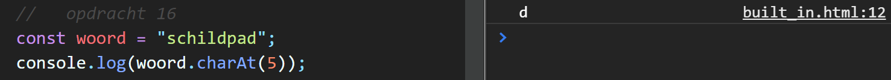
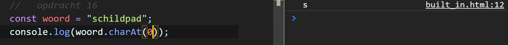
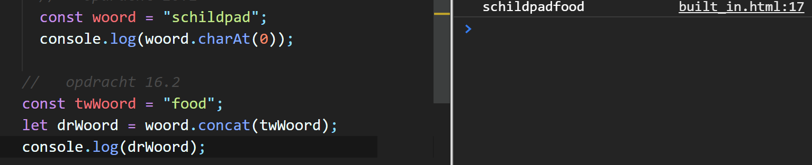
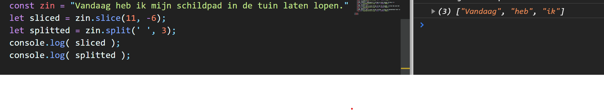
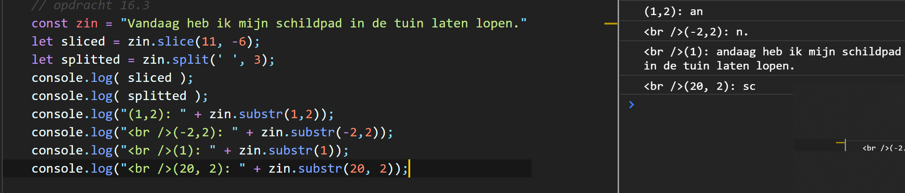

Met charAt() kan je een letter of cijfer laten kiezen van de grootte van het woord. Let op, het start op 0 niet op 1.
const woord = "schildpad";
console.log(woord.charAt(5));


Met concat() combineerd 2 strings in een nieuwe string.
Met slice() kan je een string in de zin snijden. Je kan dan aan het begin en/of bij het einde woorden dan weg laten.
Met split() kan je een string splitten. je kan de hoeveelheid text laten zien in console.
Met substr() kan je een zin specifiek ontleden. je kan de hoeveelheid text kiezen en het kan per karakter of per woord. En deze schrijf je in de console.log
